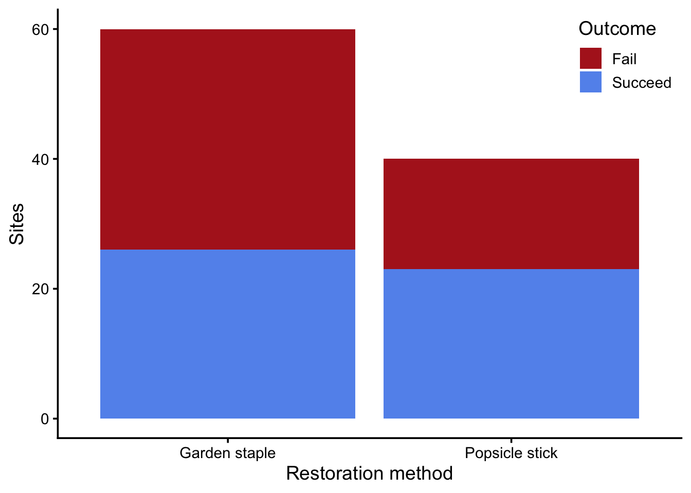

library(tidyverse)
theme_set(theme_classic(14))
set.seed(123)Learning objectives
In today’s lab you will…
- Use mathematical models to test hypotheses
- Use mathematical models to construct confidence intervals
- Compare mathematical and randomization approaches to inference
Mathematical models
This lab will repeat the inferences you conducted in last week’s lab, using mathematical models instead of randomization. Let’s recall our data from last week. You’ll need to copy the data file to your week5/data directory.
restoration <- read_csv("data/eelgrass.csv",
show_col_types = FALSE)
ggplot(restoration, aes(treatment, fill = success_fct)) +
geom_bar() +
scale_fill_manual(values = c("firebrick", "cornflowerblue")) +
labs(x = "Restoration method",
y = "Sites",
fill = "Outcome") +
theme(legend.position = "inside",
legend.position.inside = c(1, 1),
legend.justification = c(1, 1))
Hypothesis test
Once again, we want to know if the popsicle stick method works better for restoration than garden staples. This is a “yes/no?” question, so we’re conducting a hypothesis test. Instead of using permutation to estimate our sampling distribution, we will assume the sampling distribution is normally distributed. Under the null hypothesis (i.e., no difference in proportions), we make this assumption:
\[ \begin{align} \hat{p_2} - \hat{p_1} &\sim Normal(0, SE(\hat{p})) \\ \hat{p} &= \frac{x_1 + x_2}{n_1 + n_2} \\ SE(\hat{p_2} - \hat{p_1}) &= \sqrt{\hat{p} (1 - \hat{p}) (\frac{1}{n_1} + \frac{1}{n_2})} \\ \end{align} \]
Note
This math describes the assumptions of the null hypothesis for a difference in proportions. The key points are:
- The distribution of the statistic (\(\hat{p_2} - \hat{p_1}\)) follows a normal distribution (i.e., the shape of the sampling distribution).
- We assume the mean of the sampling distribution is 0, because this is the null hypothesis.
- The standard error of the sampling distribution is based on the POOLED proportion because we’re assuming no difference between the proportions.
This is how you would have tested your hypothesis using permutation:
- Identify the STATISTIC
- State your NULL and ALTERNATIVE hypotheses
- Calculate the OBSERVED statistic
- Estimate the NULL DISTRIBUTION
- Calculate P-VALUE
- Compare p-value to CRITICAL THRESHOLD
Using a mathematical model, you modify step 4. Instead of using randomization to estimate the null distribution, you use a normal variable. The following questions walk you through the steps. Note: many of these steps are exactly the same as last week’s lab.
Identify the statistic
Q1: What is the appropriate statistic for this question?
State your null and alternative hypotheses
Q2: What are your null and alternative hypotheses?
H0:
HA:
Calculate the sample statistic
Q3: How would you calculate the statistic for the sample?
Call the variable diff_props.
success_props <- restoration %>%
group_by(???) %>%
summarize(prop_success = ???)
diff_props <- ??? - ???
diff_propsEstimate the null distribution
Q4: What’s the standard error of the sample’s statistic?
# p_hat is the POOLED proportion, i.e. the overall proportion of success
p_hat <- ???
# n's are the number of observations in each treatment
# n1: number of garden staple observations
# n2: number of popsicle stick observations
n1 <- ???
n2 <- ???
se_p_hat <- ???If you calculated se_p_hat correctly, the following figure should depict the PDF of the null distribution. It should be a normal variable with mean equal to 0 and standard deviation equal to the standard error of \(\hat p\).
null_dist <- tibble(
diff_prop = seq(-0.4, 0.4, length.out = 1000),
density = dnorm(diff_prop, mean = 0, sd = se_p_hat)
)
ggplot(null_dist, aes(diff_prop, density)) +
geom_line(color = "cornflowerblue", linewidth = 2) +
geom_vline(xintercept = diff_props, color = "firebrick", linewidth = 2)Calculate the p-value
Use the pnorm() function to get the area under the curve of a normal distribution.
Tip
By default, pnorm() will tell you the area under the curve to the left of a value. Since we want the area to the right of the observed statistic, set lower.tail to FALSE.
Q5: Fill in the blanks to calculate the p-value
p_val <- pnorm(???, mean = ???, sd = ???, ???)
p_valCompare p-value to critical threshold
Q6: How does your p-value compare to a critical threshold \(\alpha=0.05\)? How would you interpret that?
Confidence interval
Now we want to estimate how differently the popsicle stick and garden staple methods perform. This is a “how much?” question, so we’re constructing a confidence interval. Instead of using bootstrapping to estimate our sampling distribution, we will assume the sampling distribution is normally distributed. We make this assumption:
\[ \begin{align} \hat{p_2} - \hat{p_1} &\sim Normal(p_2 - p_1, SE(\hat{p_2} - \hat{p_1})) \\ SE(\hat{p_2} - \hat{p_1}) &= \sqrt{\frac{\hat{p_1}(1 - \hat{p_1})}{n_1} + \frac{\hat{p_2}(1 - \hat{p_2})}{n_2}} \\ \end{align} \]
Note
This math describes the assumptions of constructing a confidence interval for a difference in proportions. The key points are:
- The distribution of the statistic (\(\hat{p_2} - \hat{p_1}\)) follows a normal distribution (i.e., the shape of the sampling distribution).
- We assume the mean of the sampling distribution is the population parameter (\(p_2 - p_1\)).
- The standard error of the sampling distribution is based on the two samples’ proportions, rather than pooling them, because we’re assuming there’s a difference between the proportions.
This is how you would have built a confidence interval using bootstrapping:
- Identify the STATISTIC
- Substitute sample for population and draw BOOTSTRAP SAMPLES
- Estimate the BOOTSTRAP DISTRIBUTION of the statistic
- Construct the CONFIDENCE INTERVAL
Using a mathematical model changes how steps 2 and 3 work, with the same goal of estimating the sampling distribution. Instead of using randomization to draw bootstrap samples, you use a normal variable. The procedure works like this:
- Identify the STATISTIC
- Calculate the STANDARD ERROR of the statistic
- Construct the CONFIDENCE INTERVAL using a normal variable
The following questions walk you through the steps.
Identify the statistic
Q7: What is the appropriate test statistic for this question?
Calculate the standard error
Q8: Fill in the blanks below to calculate the standard error of the statistic
Note
Remember that the standard error is going to differ between hypothesis testing and confidence intervals. Hypothesis testing begins by assuming the null hypothesis is true, so the standard error describes a scenario where there are no differences (\(p_2=p_1\)). Confidence intervals assume the difference is real, so the standard error comes from a different scenario (\(p_2 > p_1\)). Hence the difference in equations.
# Calculate the proportions of the two treatments
# Let treatment 1 be "Garden staple"
p_hat1 <- ???
# Let treatment 2 be "Popsicle stick"
p_hat2 <- ???
# n1 and n2 remain the same from before
# Calculate standard error
se_diff_props <- ???
se_diff_propsIf you calculated se_diff_props correctly, the following figure should depict the PDF of the sampling distribution. It should be a normal variable with mean equal to the observed statistic in the sample and standard deviation equal to the standard error.
sampling_dist <- tibble(
diff_prop = seq(-0.2, 0.5, length.out = 1000),
density = dnorm(diff_prop, mean = diff_props, sd = se_diff_props)
)
ggplot(sampling_dist, aes(diff_prop, density)) +
geom_line(color = "cornflowerblue", linewidth = 2) +
geom_vline(xintercept = diff_props, color = "firebrick", linewidth = 2)Construct the confidence interval
Using bootstrapping, you constructed the confidence interval using the 2.5% and 97.5% quantiles of the bootstrapped sampling distribution. Using the mathematical model, you use the function qnorm(). Whereas pnorm() returns the area under the curve, qnorm() tells you what value corresponds to a given area. In other words, they’re inverses of each other.
If you wanted to shade in the middle 95% of the area in the figure above, qnorm() would tell you the left and right boundaries.
Q9: Fill in the blanks to use qnorm() in constructing the confidence interval.
diff_props_ci <- qnorm(???, mean = ???, sd = ???)
diff_props_ciQ10: How would you interpret this confidence interval
Comparing mathematical and randomization approaches
Q11: What are permutation tests and mathematical models both trying to estimate for hypothesis tests?
Q12: What are bootstrapping and mathematical models both trying to estimate for confidence intervals?
Q13: What area under the curve is relevant to hypothesis tests? What R function calculates it for a mathematical model?
Q14: What area under the curve is relevant to confidence intervals? What R function calculates it for a mathematical model?
Go further
The restoration data frame contains data about the eelgrass shoot density of the plot post-restoration (shoot_density_m2). Use this data to do the following.
- Construct the 95% CI of mean shoot density following restoration (ignoring the restoration method). Use a mathematical model. Recall the standard error of a mean is:
\[ SE(\bar x) = \frac{s}{\sqrt{n}} \]
- Estimate the p-value of the difference in mean shoot density between the two restoration methods. Use a mathematical model. Recall the standard error of a difference in means, under the null hypothesis, is:
\[ SE(\bar{x_2}-\bar{x_1}) = \sqrt{\frac{s_1^2}{n_1} + \frac{s_2^2}{n_2}} \]
- Repeat constructing the 95% CI of mean shoot density following restoration, but use bootstrapping instead of a mathematical model.
- Repeat estimating the p-value of the difference in mean shoot density between the two restoration methods, but use a permutation test instead of a mathematical model.